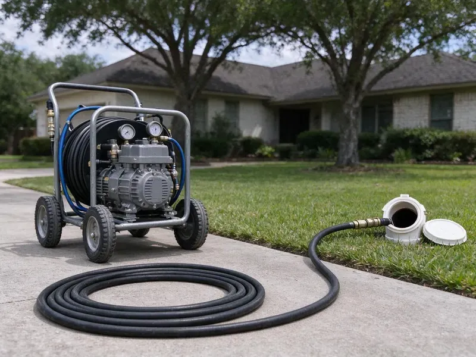
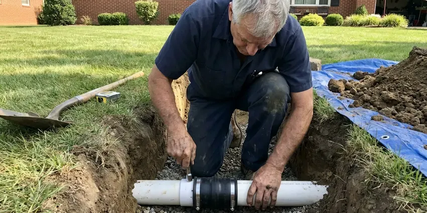

Hydro Jetting in Marana, AZ
Hydro jetting in Marana, AZ uses pressurized water to scour pipes back to full size, removing grease, scale and roots a cable leaves behind.
- Same-Day Jetting Available
- Camera Inspection Before Jetting
- Residential and Commercial Units
- Pipe-Safe Pressure Settings

Blast Out Grease and Roots for Good With Hydro Jetting in Marana, AZ.
One thorough jetting often replaces years of repeat snaking visits.
High-Pressure Hydro Jetting in Marana, AZ That Cleans the Whole Pipe
CVR Plumbing uses hydro jetting to clean drain and sewer pipes with water at pressures commonly in the 3,000 to 4,000 PSI range for residential work. Specialized nozzles push rear-facing jets that scrub the pipe wall while pulling the hose forward.
Our expertise includes:
- Cart and trailer jetters for homes and commercial lines
- Rotating, root-cutting and penetrating nozzle selection
- Pre and post jetting video inspection with recordings

Additional Drain Services Services in Marana, AZ
From stubborn kitchen clogs to main sewer backups, our drain services in Marana, AZ restore full flow fast and keep it that way.




Marana sewer line replacement specialists


Customers
Why Choose CVR Plumbing for Hydro Jetting in Marana, AZ?
A cable punches a hole through a blockage, but grease and scale stay on the pipe walls and catch new debris. Jetting removes that coating so the line stays clear far longer.
- Full-Wall Cleaning, Jetting scrubs the pipe circumference instead of leaving a narrow channel through the clog.
- Inspection First, We camera the line before jetting so pressure settings fit the pipe condition.
- Chemical Free, Hydro jetting uses only water, so nothing harsh goes into your plumbing or the sewer system.
Citywide Coverage
Our jetting units serve every neighborhood in Marana, from tight older lots to commercial strips with long sewer runs. Cart jetters fit through side gates and into garages where a trailer cannot reach.
Experienced Team
Our jetting techs are trained to read pipe conditions on camera and choose pressure, flow and nozzle type to match. They have cleared everything from restaurant grease lines to root-choked clay laterals.
Safety-First Approach
High-pressure water can injure people if misused, so our techs use protective gear and keep hands clear of the hose and nozzle. We secure access points so water does not spray back into your home.
Trusted Certified Marana Plumbing Services Professionals
At CVR Plumbing, we take pride in providing certified plumbing services throughout Marana, AZ. Backed by recognized industry credentials, our experienced plumbers combine technical skill with genuine customer care. Whether it is repair, installation, or maintenance, we follow strict safety and quality standards to deliver lasting results you can trust.
Call Us Now PHCC Plumbing Contractor Recognition
PHCC Plumbing Contractor Recognition Better Business Bureau (BBB) Accreditation
Better Business Bureau (BBB) Accreditation Angi Certified Pro
Angi Certified Pro ISO 9001 Quality Management Certification
ISO 9001 Quality Management CertificationPowerful Hydro Jetting Services in Marana, AZ
Residential Sewer Line Jetting in Marana
Main sewer lines in homes are usually 3 or 4 inches and can collect years of grease, soap, hard water scale and roots. We feed jetting hose through a cleanout and work it toward the street, cleaning in passes. Rear-facing jets pull the nozzle forward while forward jets break up heavy blockages. The water carries debris down to the city main. A camera run afterward shows the pipe walls clean and open.

Kitchen Line Grease Jetting in Marana, AZ
Kitchen drains are the most common grease trouble spot in any home or restaurant. Grease clings to pipe walls and hardens, especially where the line runs flat under a slab. Jetting melts and scrubs this buildup away instead of just poking a hole through it. We use smaller hose and nozzles sized for 1-1/2 and 2 inch kitchen lines. This keeps your sink and dishwasher draining well for much longer.
Root Cutting With Hydro Jetting in Marana
Specialty root-cutting nozzles spin or use focused streams to slice through fine roots inside a sewer. This is effective on root hairs that a cable saw can leave behind. Roots from desert landscaping trees often enter at clay pipe joints or cracks. Jetting clears them out and gives a clean view of each entry point on camera. That helps you decide whether lining or a spot repair is the next step.
Commercial Hydro Jetting in Marana, AZ
Restaurants, food processors, hotels and apartment complexes create heavy grease and solids loads. Our trailer jetters provide higher flow for larger lines and longer runs. We clean grease interceptor outlets, floor drains and main laterals on a schedule that fits your operation. After-hours service keeps your doors open. Written service records help with health inspections and property management.
Scale Removal in Cast Iron Pipes in Marana
Cast iron drains in older homes build up rust tubercles and mineral scale, and the hard water common here speeds that process. Jetting with the right nozzle can strip much of this buildup and restore flow. We keep pressure in a safe range for aged iron and watch the camera for thin spots. This cleaning is also the standard prep step before pipe lining. Clean pipe walls help a liner bond properly.
Hydro Jetting Before Pipe Lining in Marana, AZ
Cured-in-place pipe lining needs a clean surface to adhere and seal correctly. We jet the host pipe to remove roots, scale and debris, then camera it to confirm it is ready. Any heavy obstructions are cut out before the liner is installed. Skipping this step can lead to wrinkles or poor bonding. Proper prep is part of why lined pipe can last for decades.
Preventive Maintenance Jetting in Marana
If your line has a history of clogs, a maintenance plan can keep it clear. We schedule jetting every 12 to 24 months for homes and more often for busy commercial kitchens. Regular cleaning prevents the buildup from ever reaching the point of a backup. It also gives us a chance to camera the line and catch new problems early. Maintenance customers get priority scheduling.

Hydro Jetting Cost Compared to Snaking in Marana, AZ
Jetting costs more than a basic cable cleaning on the first visit. However, it often lasts much longer because it removes the coating that causes repeat clogs. If you are paying for snaking several times a year, jetting usually costs less over time. We give you both prices and our honest view on which fits your line. For simple soft clogs, a cable may be all you need.
Hydro Jetting Near Me in Marana, AZ
Searching for hydro jetting near me usually means a clog keeps coming back. Our local crew brings jetting equipment and a camera to Marana homes and businesses, so we can diagnose and clean in one visit. You see the before and after footage.
Being local means we know which neighborhoods have older cast iron or clay pipe and which have newer PVC. That helps us choose safe pressure settings and the right nozzle. It also means faster arrival times when you need help.
CVR Plumbing at a Glance
- Licensed and insured plumbers serving Marana, AZ
- Same-day appointments and 24/7 emergency response
- Upfront, flat-rate pricing before work begins
- 4.8-star rated by 713+ Arizona customers
Marana Map
Marana Information
- Population
- 58,430
- Area codes
- 520/442/928
- Service area
- Marana and communities within 40 miles
- Nearby
- Casas Adobes, Catalina Foothills, Tucson, Casa Grande
Hard water scale bonds with kitchen grease inside pipes in Marana, AZ, so hydro jetting is often the only way to restore full flow in older lines.
Expert Services
Trust our professionals for reliable CVR Plumbing solutions in Marana, AZ.
Our Specialized Plumbing Services in Marana, AZ
At CVR Plumbing, we provide a complete range of plumbing services across Marana, AZ. From leak detection to full system installations, our team ensures fast, precise, and affordable service for both residential and commercial properties. Explore our core services below:


How Our Hydro Jetting Process Works in Marana, AZ
Hydro jetting is done in a careful sequence to protect your pipes and get the best clean.
Request a Quote
Call (928) 470-9009 and tell us about the clogs you are having and how often. We schedule an inspection and give you a price range.
Inspect the Pipe
We run a camera to check pipe material, condition and the cause of the blockage. This tells us the safe pressure and the right nozzle.
Jet and Verify
We jet the line in passes until the walls are clean and the water runs clear. A final camera run confirms the result.
Frequently Asked Questions About Hydro Jetting in Marana
Residential hydro jetting in Marana typically costs $350 to $800, depending on line length, access and how heavy the buildup is. Commercial jetting is often priced by the hour and may run higher.
Small consumer jetters exist, but they lack the pressure and flow of professional units. High-pressure water can also injure untrained users and damage fragile pipe.
Most residential jobs take 1 to 3 hours including inspection. Long commercial lines or heavy grease can take longer.
Repeat clogs in the same line, slow drains after snaking, sewer odors and known grease or root problems are good reasons to consider jetting.
It is safe for most pipes in fair condition when pressure is set correctly. We camera the line first and avoid jetting pipe that is broken or collapsed.
We use professional cart and trailer jetters along with rotating and root-cutting nozzles from established manufacturers. Color camera systems record the line before and after.
Yes, we guarantee our jetting work in writing. The term depends on pipe condition found during the camera inspection.
A thorough jetting often keeps a line clear for a year or more, depending on use and roots. Lines with heavy root intrusion may need maintenance or a repair.
What People Are Saying About Our Plumbing Experts?

Patricia H.
We had a slab leak that two other companies could not find. CVR Plumbing located it in under an hour, explained our options, and the price matched the quote to the dollar.
Slab Leak Repair · Casas Adobes, AZ
Mark T.
When our office needed drain cleaning, CVR Plumbing provided quick, reliable service. The plumber arrived on time and made sure every drain flowed perfectly before leaving. Very satisfied.
Drain Cleaning · Queen Creek, AZ
Robert G.
The trenchless sewer replacement saved our front yard. They walked us through the camera inspection footage first so we knew exactly what we were paying for.
Sewer Line Replacement · Catalina Foothills, AZ
Emily R.
I called CVR Plumbing for plumbing repair, and the technician was fast, polite, and thorough. They explained the problem clearly and fixed it the same day. I will definitely hire them again. Highly recommended!
Plumbing Repair · Marana, AZ
Sofia M.
Two new toilets installed in one visit, no mess left behind, and the tech even adjusted a faucet he noticed was dripping. Fair pricing and really friendly.
Toilet Installation · Marana, AZLaura S.
I scheduled a water heater replacement, and the team made the process smooth and affordable. The new unit works perfectly, and they cleaned up after completing the job.
Water Heater Replacement · Tucson, AZ